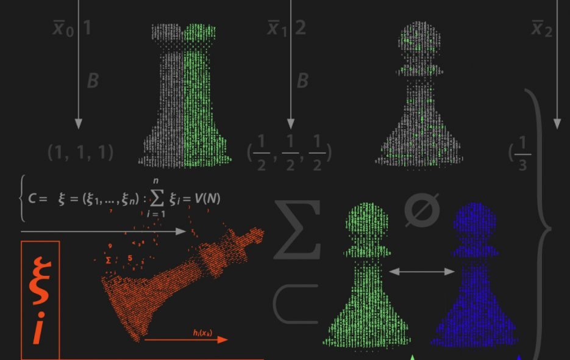

Методические рекомендации обучающимся по организации индивидуальной подготовки к ЕГЭ по Информатике и ИКТ 2022 года
Дорогие друзья!
Методические рекомендации предназначены для обучающихся 11 классов, планирующих сдавать ЕГЭ 2020 года по информатике и ИКТ. Методические рекомендации содержат советы разработчиков контрольных измерительных материалов ЕГЭ и полезную информацию для организации индивидуальной подготовки к ЕГЭ. В рекомендациях описана структура и содержание контрольных измерительных материалов ЕГЭ 2020 года, приведён индивидуальный план подготовки к экзамену, указаны темы, на освоение / повторение которых целесообразно обратить особое внимание. Даны рекомендации по выполнению разных типов заданий, работе с открытым банком заданий ЕГЭ и другими дополнительными материалами, полезные ссылки на информационные материалы ФИПИ и Рособрнадзора.
Введение
Скоро вам предстоит сдать единый государственный экзамен (ЕГЭ) по информатике и ИКТ. Ваша основная задача – показать хорошую подготовку и получить возможность поступить в выбранный Вами вуз. Данные рекомендации помогут Вам в подготовке к экзамену.
В 2022 г., как и в предыдущие годы, вариант КИМ ЕГЭ по информатике и ИКТ состоит из двух частей, различающихся типом ответа на предложенные задания – в первой части собраны задания с кратким ответом, во второй – с развёрнутым ответом. Задания каждой части расположены по возрастанию сложности, поэтому различающиеся уровнем сложности задания по одним и тем же разделам курса информатики и ИКТ в КИМ могут находиться не рядом друг с другом. В таблице 1 представлено распределение заданий по основным тематическим блокам курса информатики и ИКТ.
Индивидуальный план подготовки к экзамену
План подготовки к экзамену, учитывая Ваш текущий уровень освоения учебного материала. Рекомендуем Вам прорешать тренировочный вариант ЕГЭ, например, демонстрационный вариант КИМ этого года или прошлых лет, открытые варианты и задания из Открытого банка заданий ЕГЭ, размещенного на официальном сайте ФГБНУ «ФИПИ» www.fipi.ru. Также можно воспользоваться различными сборниками вариантов, при этом следует обращать внимание на соответствие этих вариантов официальному демонстрационному варианту КИМ по структуре и тематике заданий.
Информация и информационные процессы. Кодирование информации. Системы счисления
Основные понятия:
Информатика, информация, информационный процесс, информационная система; виды информации по способам ее восприятия человеком и по способам ее представления на материальных носителях.
Логические основы компьютера
Основные понятия:
Алгебра логики. Высказывание. Логические операции: НЕ, И, ИЛИ, исключающее ИЛИ, импликация, эквивалентность. Логическое выражение, логическая формула. Таблица истинности. Законы алгебры логики. Булевы функции. Канонические формы логических формул.
Теория игр. Игровые стратегии
Основные понятия:
Игрок, ход игрока, партия, стратегия игры, выигрышная стратегия, дерево игры.
Информационный поиск средствами операционной системы или текстового процессора
Основные понятия:
текстовый процессор; текстовый редактор; форматы текстовых документов; поиск в текстовом документе; область поиска; поиск и замена данных; шрифт; форматирование шрифта; абзац; форматирование абзацев; символы прописные и строчные; поисковый запрос.
Спасибо за внимание!
Удачной подготовки к экзаменам